Practices for Lesson 6: Administering User
2020.01.29 BoobooWei
实践6:概览
Practices for Lesson 6: Overview
Background: You need to create a user account for Jenny Goodman, the new human resources department manager. There are also two new clerks in the human resources department, David Hamby and Rachel Pandya. All three must be able to log in to the orcl database and to select data from, and update records in, all the HR schema tables. The manager also needs to be able to insert and delete new HR records. Ensure that if the new users forget to log out at the end of the day, they are automatically logged out after 15 minutes. You also need to create a new user account for the inventory application that you are installing.
背景:
1.您需要为以下人员创建用户帐户：
- 新上任的人力资源部经理 Jenny Goodman
- 人力资源部两位新职员 David Hamby 和 Rachel Pandya
权限如下：
- 所有人能够登录到数据库
- 所有人能访问 HR schema中的所有表，并有更新权限
- 经理需要能够插入和删除新的HR记录
- 如果新用户在一天结束时忘记登出，他们将在15分钟后自动登出。
2.您还需要为正在安装的inventory应用程序创建一个新的用户帐户。
实践6-1:创建用户和配置文件
Practice 6-1: Creating a User and a Profile
Overview
In this practice, you create the INVENTORY user to own the new Inventory application. You create a profile to limit the idle time of users. If a user is idle or forgets to log out after 15 minutes, the user session is ended.
Task
- Mandatory task: Create the INVENTORY user with a password of oracle_4U.
- Create a profile named HRPROFILE that allows only 15 minutes idle time.
. Set the RESOURCE_LIMIT initialization parameter to TRUE so that your profile limits are enforced.
Practice
- 强制任务:创建用户
INVENTORY密码oracle_4U
# sqlplus / as sysdba |
创建一个仅允许15分钟空闲时间的名为
HRPROFILE的配置文件。访问 Enterprise Manager Database Express，使用SYSDBA用户身份登录，然后执行以下步骤:
访问 http://localhsot:5505/em/login
Step Window/Page Description Choices or Values a. EM Express Select Security > Profiles b. Profiles Select Create Profile. c. Create Profile Dialog: New Profile Enter HRPROFILE in the Name field. Click the Next icon . d. Create Profile Dialog: General Select 15 in the Idle Time (Minutes) menu. Leave all the other fields set to the default value of Unlimited. Click the Next icon . e. Create Profile Dialog: Password Review the Password options. All should be set to default values of Unlimited or Null. Click Show SQL to review the SQL command for this task. f. Confirmation Click OK. g. Create Profile Dialog: Password Click OK. h. Confirmation Click OK. 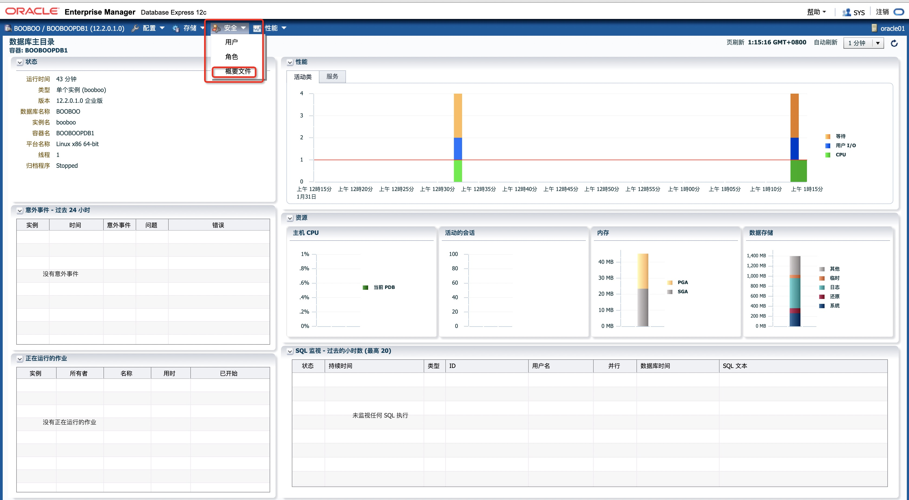
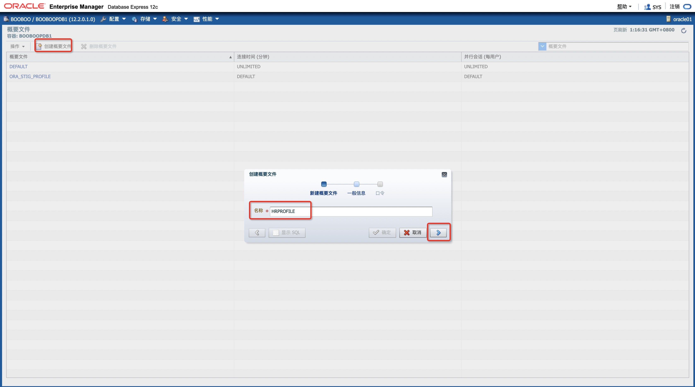
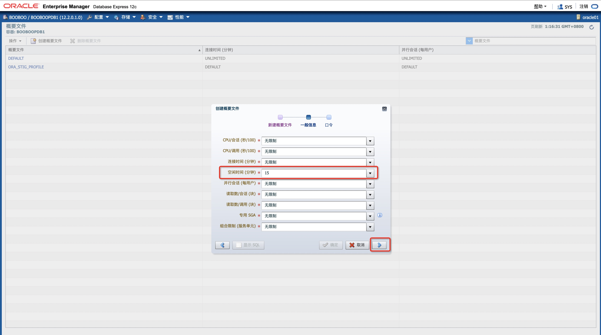
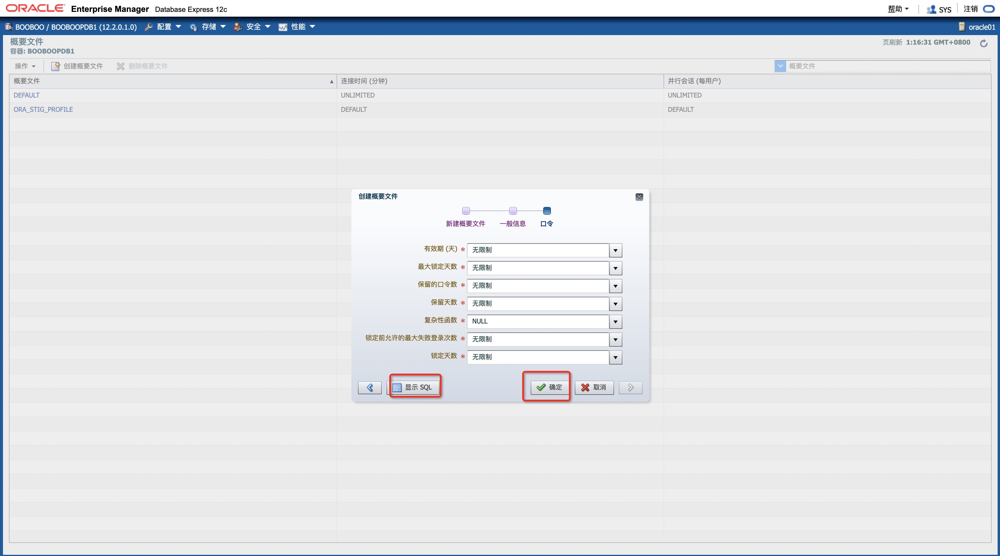
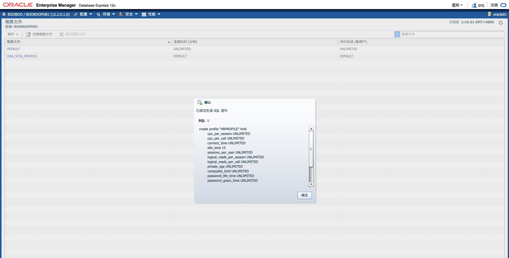

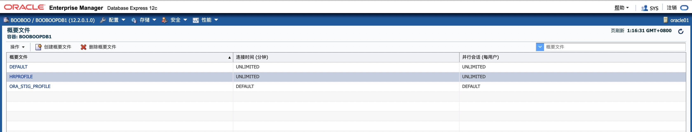
create profile "HRPROFILE" limit
cpu_per_session UNLIMITED
cpu_per_call UNLIMITED
connect_time UNLIMITED
idle_time 15
sessions_per_user UNLIMITED
logical_reads_per_session UNLIMITED
logical_reads_per_call UNLIMITED
private_sga UNLIMITED
composite_limit UNLIMITED
password_life_time UNLIMITED
password_grace_time UNLIMITED
password_reuse_max UNLIMITED
password_reuse_time UNLIMITED
password_verify_function NULL
failed_login_attempts UNLIMITED
password_lock_time UNLIMITED;将
RESOURCE_LIMIT初始化参数设置为TRUE，以便执行配置文件限制。Step Window/Page Description Choices or Values a. Select Configuration > Initialization Parameters b. Initialization Parameters Enter resource_limit in the Name field. c. Initialization Parameters Confirm that resource_limit is set to true. If it is not set to true, perform steps d–f. d. Initialization Parameters Select resource_limit Click Set. e. Set Initialization Parameter Set Value true. Click OK. f. Confirmation Click OK. 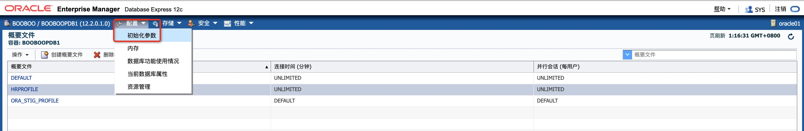
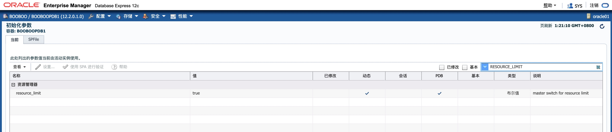
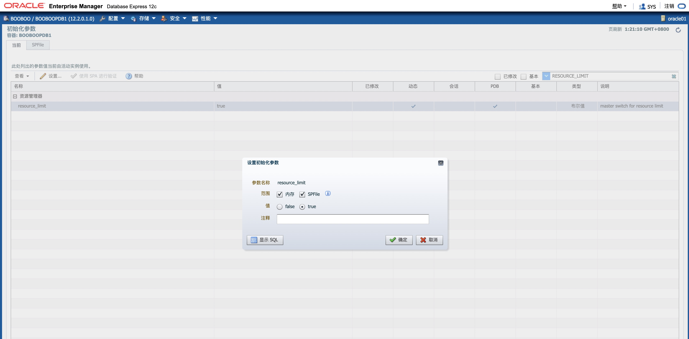

alter system set "resource_limit"=true scope=both sid='*';
KnowledgePoint
实践6-2:创建角色
Practice 6-2: Creating Roles
Overview
In this practice, you create the HRCLERK and HRMANAGER roles that will be used in the next practice.
Task
- Create the role named HRCLERK with SELECT and UPDATE permissions on all the HR schema tables.
. Create the role named HRMANAGER with INSERT and DELETE permissions on all the HR tables. Grant the HRCLERK role to the HRMANAGER role.
Practice
在此实践中，您将创建将在下一个实践中使用的HRCLERK和HRMANAGER角色。
- 创建角色
HRCLERK: 对HR schema有select和update权限。
create role "HRCLERK" NOT IDENTIFIED; |
- 创建角色
HRMANAGER: 对HR schema有insert和delete权限，并将角色HRCLERK授权给角色HRCLERK。
create role "HRMANAGER" NOT IDENTIFIED; |
KnowledgePoint
使用图形化界面管理确实方便；
如果使用命令行，如何快速生成授权命令？
declare |
实践6-3:创建和配置用户
Practice 6-3: Creating and Configuring Users
Overview
In this practice, you create the following users and assign appropriate profiles and roles to these users:
| Name | Username | Description |
|---|---|---|
| David Hamby | DHAMBY | A new HR Clerk |
| Rachel Pandya | RPANDYA | A new HR Clerk |
| Jenny Goodman | JGOODMAN | A new HR Manager |
Task
Create an account for David Hamby, a new HR clerk.
Create an account for Rachel Pandya, another new HR clerk. Modify the
P6script.sqlscript to create the RPANDYA user.Create an account for Jenny Goodman, the new HR manager. Modify the
P6script.sqlscript to take parameters for the username and role. Execute the script to create the JGOODMAN user with the HRMANAGER role.Test the new users in SQL*Plus. Connect to the orcl database as the DHAMBY user. Use oracle_4U as the new password. Select the row with EMPLOYEE_ID=197 from the HR.EMPLOYEES table. Then attempt to delete it. You should get the “insufficient privileges” error.
Repeat the test as the **J**GOODMAN user. Use **oracle_4U** as the new password. After deleting the row, issue a rollback, so that you still have the original 107 rows.
Use SQL*Plus to connect to the orcl database as the RPANDYA user. Change the password to oracle_4U. (You must change the password, because this is the first connection as RPANDYA.) Leave RPANDYA connected during the next lesson or at the end of the day. HRPROFILE specifies that users whose sessions are inactive for more than 15 minutes will automatically be logged out. Verify that the user was automatically logged out by trying to select from the HR.EMPLOYEES table again.
Practice
在此实践中，您将创建以下用户并为这些用户分配适当的配置文件和角色:
| 姓名 | 用户名 | 描述 |
|---|---|---|
| David Hamby | DHAMBY | A new HR Clerk |
| Rachel Pandya | RPANDYA | A new HR Clerk |
| Jenny Goodman | JGOODMAN | A new HR Manager |
使用EM，为David Hamby，一个新的人力资源职员创建一个帐户。
Step Window/Page Description Choices or Values a. EM Express Select Security > Users b. Users Click Create User. c. Create User: User Account Name: DHAMBY Authentication: Select Password Password: newuser Profile: HRPROFILE Select Password expired Click the Next icon. Note: This user will have to change the password. d. Create User: Tablespace Verify Default Tablespace: USERS Temporary Tablespace: TEMP Click the Next icon. e. Create User: Privilege Select Connect and move it to the right pane. Click Show SQL. f. Confirmation Click OK. g. Create User: Privilege Select HRCLERK and move it to the right pane. Hint: Enter HR in the search/filter box. Click Show SQL. h. Confirmation Copy and paste the SQL statements into a gedit window. i. Linux Desktop (see screenshot below) Click Applications > Accessories > gedit Text Editor In gedit, click File > Save as Enter P6script.sql as the file name. Save in the default location of /home/oracle. Click Save. Click File > Quit j. Confirmation Click OK. k. Create User: Privilege Click OK. l. Confirmation Click OK. 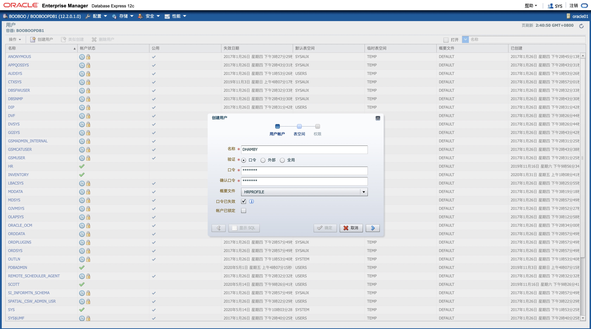
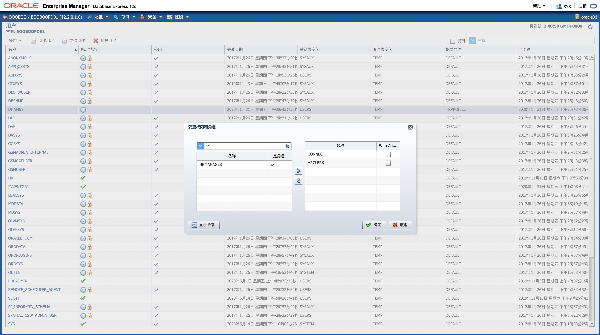
create user "DHAMBY" identified by "newuser"
profile "HRPROFILE"
password expire
account unlock
default tablespace "USERS"
temporary tablespace "TEMP";
grant "CONNECT" to "DHAMBY";
grant "HRCLERK" to "DHAMBY";通过SQL脚本
P6script.sql为另一位新的人力资源职员Rachel Pandya创建一个账户RPANDYA。
cat > /home/oracle/P6script.sql << ENDF |
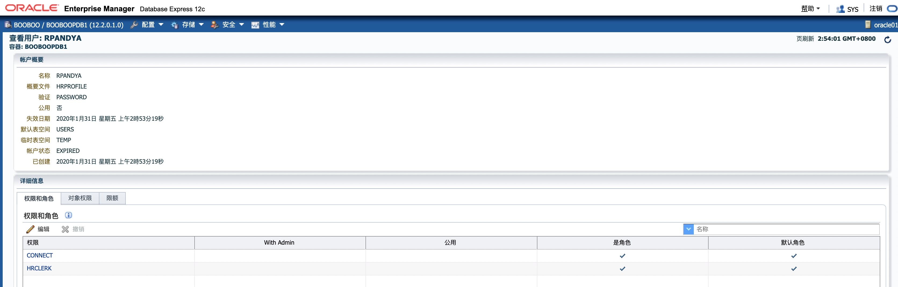
- 通过修改脚本
P6script.sql为新上任的人力资源经理JGOODMAN开设一个账户，该脚本需要输入用户名和角色参数。执行脚本创建具有HRMANAGER角色的JGOODMAN用户。
cat > /home/oracle/P6script.sql << ENDF |
执行结果：
[oracle@oracle01 ~]$ sqlplus sys/oracle@booboopdb1 as sysdba @/home/oracle/P6script.sql |
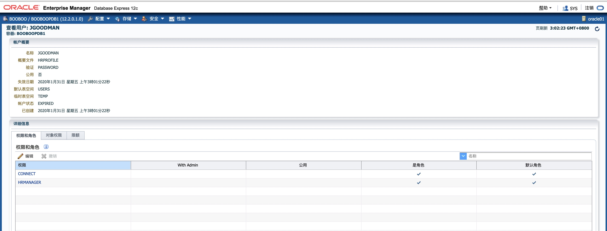
在SQL * Plus 中测试新用户，使用 DHAMBY 用户连接到数据库，使用oracle_4U作为新密码尝试从
"HR"."EMPLOYEES"中选择具有EMPLOYEE_ID=197的行，然后尝试删除它。您应该得到“权限不足“错误。[oracle@oracle01 ~]$ sqlplus DHAMBY/newuser@booboopdb1
SQL*Plus: Release 12.2.0.1.0 Production on Fri Jan 31 03:08:01 2020
Copyright (c) 1982, 2016, Oracle. All rights reserved.
ERROR:
ORA-28001: the password has expired
Changing password for DHAMBY
New password:
Retype new password:
Password changed
Connected to:
Oracle Database 12c Enterprise Edition Release 12.2.0.1.0 - 64bit Production
DHAMBY@booboopdb1>select * from tab;
no rows selected
DHAMBY@booboopdb1>select * from hr.EMPLOYEES where EMPLOYEE_ID=197;
EMPLOYEE_ID FIRST_NAME LAST_NAME EMAIL
----------- -------------------- ------------------------- -------------------------
PHONE_NUMBER HIRE_DATE JOB_ID SALARY COMMISSION_PCT MANAGER_ID DEPARTMENT_ID
-------------------- --------- ---------- ---------- -------------- ---------- -------------
197 Kevin Feeney KFEENEY
650.507.9822 23-MAY-06 SH_CLERK 3000 124 50DHAMBY@booboopdb1>delete from hr.EMPLOYEES where EMPLOYEE_ID=197;
delete from hr.EMPLOYEES where EMPLOYEE_ID=197 *
ERROR at line 1:
ORA-01031: insufficient privileges
|
在SQL * Plus 中测试新用户，使用 RPANDYA 用户连接到数据库，使用oracle_4U作为新密码。验证概要文件配置中的空闲时间15分钟的含义。
HRPROFILE指定会话不活动超过15分钟的用户将自动注销。
[oracle@oracle01 ~]$ sqlplus RPANDYA/newuser@booboopdb1
SQL*Plus: Release 12.2.0.1.0 Production on Fri Jan 31 03:18:08 2020
Copyright (c) 1982, 2016, Oracle. All rights reserved.
ERROR:
ORA-28001: the password has expired
Changing password for RPANDYA
New password:
Retype new password:
Password changed
Connected to:
Oracle Database 12c Enterprise Edition Release 12.2.0.1.0 - 64bit Production
RPANDYA@booboopdb1>SELECT salary FROM hr.employees WHERE EMPLOYEE_ID=197;
SALARY
----------
3000
RPANDYA@booboopdb1>select to_char(sysdate,'YYYY-MM-DD HH:mm:ss') from dual;
TO_CHAR(SYSDATE,'YY
-------------------
2020-01-31 03:01:42
--等待15分钟
RPANDYA@booboopdb1>SELECT salary FROM hr.employees WHERE EMPLOYEE_ID=197;
ERROR at line 1:
ORA-02396: exceeded maximum idle time, please connect again
KnowledgePoint
EM Express 创建和管理用户帐户
如何使用Oracle Enterprise Manager Database Express（EM Express）创建和管理用户帐户。它包含以下部分：
数据库安全指南
实践6-4:使用安全的应用程序角色
Overview
在本教程中，您将学习如何使用“安全的应用程序角色”防止将角色授予未授权用户。
Task
本教程介绍了 OSRD 的两位员工（即 Karen Partners 和 Louise Doran）如何尝试获取 oe.orders 表中的信息。 角色“ots_role”中定义了该表的访问权限。 由于 Karen 是 Louise 的经理，因此 Karen 将能够访问 oe.orders 中的信息，而 Louise 却不能。
- 创建用户并设置表访问权限
- 将创建一个数据库角色，并将该角色授予 Karen 而不是 Louise
- 创建并使用一个安全的应用程序角色
Practice
创建用户并设置表访问权限
connect dba1/oracle@emrep
drop user "LOUISE.DORAN@OSRD.COM" cascade;
drop user "KAREN.PARTNERS@OSRD.COM" cascade;
create user "LOUISE.DORAN@OSRD.COM" identified by welcome1;
create user "KAREN.PARTNERS@OSRD.COM" identified by welcome1;
grant connect, create session to "LOUISE.DORAN@OSRD.COM";
grant connect, create session to "KAREN.PARTNERS@OSRD.COM";
connect hr/hr@emrep
update employees set email='LOUISE.DORAN@OSRD.COM' where email='LDORAN';
update employees set email='KAREN.PARTNERS@OSRD.COM' where email='KPARTNER';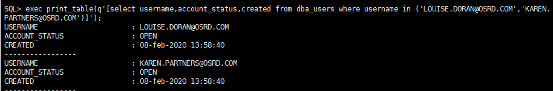
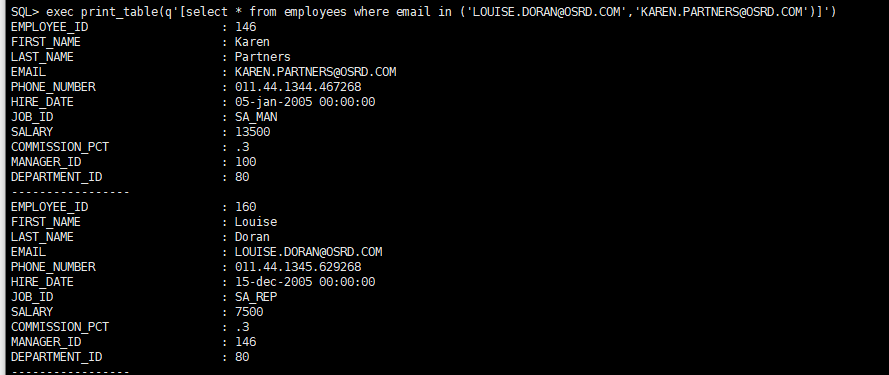
将创建一个数据库角色，并将该角色授予 Karen 而不是 Louise
connect oe/oe@emrep
revoke select on oe.orders from public;
revoke select on oe.customers from public;
connect hr/hr@emrep
grant select on hr.employees to public;
connect dba1/oracle@emrep
drop role ots_role;
create role ots_role;
connect oe/oe@emrep
grant select on oe.orders to ots_role;
grant select on oe.customers to ots_role;
connect dba1/oracle@emrep
grant ots_role to "KAREN.PARTNERS@OSRD.COM";
alter user "KAREN.PARTNERS@OSRD.COM" default role none;
grant ots_role to "LOUISE.DORAN@OSRD.COM";
alter user "LOUISE.DORAN@OSRD.COM" default role none;设置 Karen 的角色并对 oe.orders 表执行 select
connect "KAREN.PARTNERS@OSRD.COM"/welcome1@emrep;
set role ots_role;
select sales_rep_id, order_total from oe.orders order by order_total desc;不设置 LOUISE 的角色，对oe.orders表执行 select
connect "LOUISE.DORAN@OSRD.COM"/welcome1@emrep;
select sales_rep_id, order_total from oe.orders order by order_total desc;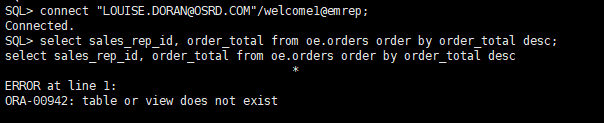
由于 Louise 未被授予
ots_role，因此她没有该角色中定义的表的访问权限。 但她只需知道该角色的名称ots_role和命令set role便可以自行解决此“问题”。 换言之，她非常轻松地获得了她不应知道的信息的访问权限。connect "LOUISE.DORAN@OSRD.COM"/welcome1@emrep;
set role ots_role;
select sales_rep_id, order_total from oe.orders where rownum < 3 order by order_total desc;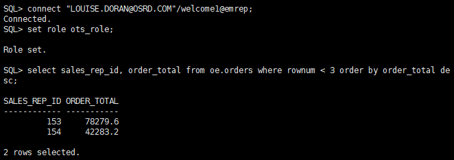
创建并使用一个安全的应用程序角色
删除原来的ot_role,重新创建一个使用安全应用程序的角色
connect dba1/oracle@emrep
drop role ots_role;
create role ots_role IDENTIFIED USING sec_roles;注意：
IDENTIFIED USING <name>此处的name可以自定义名称，本质上时一个存储过程的名称，后续需要定义该存储过程。您需要授予 oe.orders 和 oe.customers 的 select 访问权限。 然后，向每个用户授予此角色并将他们的配置文件设置为 none。
connect oe/oe@emrep
grant select on oe.orders to ots_role;
grant select on oe.customers to ots_role;
connect dba1/oracle@emrep
grant ots_role to "KAREN.PARTNERS@OSRD.COM";
alter user "KAREN.PARTNERS@OSRD.COM" default role none;
grant ots_role to "LOUISE.DORAN@OSRD.COM";
alter user "LOUISE.DORAN@OSRD.COM" default role none;现在，您可以创建安全性应用程序角色过程。
connect dba1/oracle@emrep
CREATE OR REPLACE procedure sec_roles authid current_user
as
v_user varchar2(50);
v_manager_id number :=1;
begin
v_user := (sys_context ('userenv', 'session_user'));
select manager_id into v_manager_id from hr.employees where email=v_user;
if v_manager_id = 100
then
dbms_session.set_role('ots_role');
else null;
end if;
exception
when no_data_found then v_manager_id:=0;
end sec_roles;
/该存储过程中，限定只有当雇员的manager_id为100时，才可以设置为ots_role角色。拥有查询oe.order 和 oe.customer 的权限。
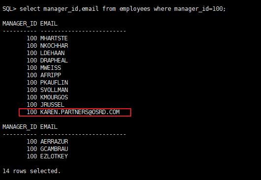
您需要授予此过程的执行权限。
connect dba1/oracle@emrep
GRANT EXECUTE ON sec_roles to "KAREN.PARTNERS@OSRD.COM";
GRANT EXECUTE ON sec_roles to "LOUISE.DORAN@OSRD.COM";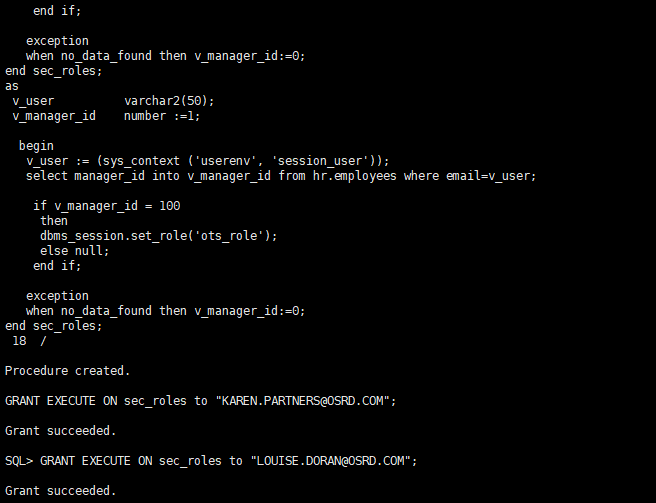
验证
connect "KAREN.PARTNERS@OSRD.COM"/welcome1@emrep;
execute dba1.sec_roles;
select sales_rep_id, order_total from oe.orders where rownum < 3 order by order_total desc;
connect "LOUISE.DORAN@OSRD.COM"/welcome1@emrep;
execute dba1.sec_roles;
select sales_rep_id, order_total from oe.orders where rownum < 3 order by order_total desc;提示：sec_roles 存储过程执行后，才会确定当前用户是否能够获取 ots_role。
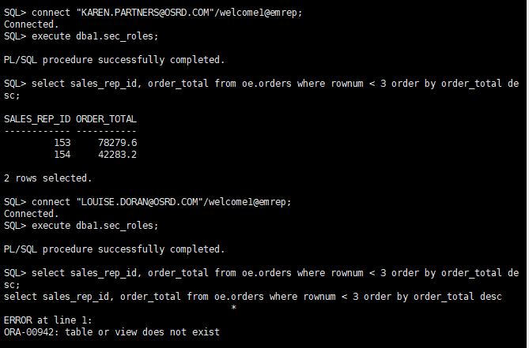
执行以下步骤清理环境
connect dba1/oracle@emrep
drop role ots_role;
drop procedure sec_roles;
drop user "KAREN.PARTNERS@OSRD.COM" cascade;
drop user "LOUISE.DORAN@OSRD.COM" cascade;
connect hr/hr@emrep
update employees set email='LDORAN' where email='LOUISE.DORAN@OSRD.COM';
update employees set email='KPARTNER' where email='KAREN.PARTNERS@OSRD.COM';
exit;
KnowledgePoint
角色是一种用于在 Oracle 数据库管理权限的强大方法。Oracle 在十多年前首次于 Oracle7 中引入了数据库角色。角色可以授予用户和其他角色。将角色授予用户后，角色可以被设置为默认角色，当用户成功地通过数据库访问权限验证时将激活与角色关联的权限。如果未将角色设置为默认角色，可以使用“set_role”命令调用它。
Oracle9i 向数据库角色引入了一个称为“安全应用程序角色”的强大增强功能。要创建安全应用程序角色，可以使用“create role”语法指定程序包名：
create role acme_hr_role identified using approles_package |
一旦授予了安全应用程序角色，用户必须有权执行与该角色相关的程序包以便使其激活。在本例中，approles_package 由数据库管理员或安全官使用 PL/SQL 进行定义。该程序包可以执行任何次数的安全检查，包括在 Oracle Application Context 中定义的应用程序特定的参数，从而使其难于规避。
这是保护角色的最安全的方式，因为数据库制定的决策基于您的安全策略的实现，而且这些定义存储在一个中心位置，而不是存储在您所有的应用程序中。这还提供了其他好处：如果该策略需要更新，则在数据库中只能进行一次。此外，无论用户如何连接到数据库，结果都是相同的，因为该策略是绑定到该角色的。